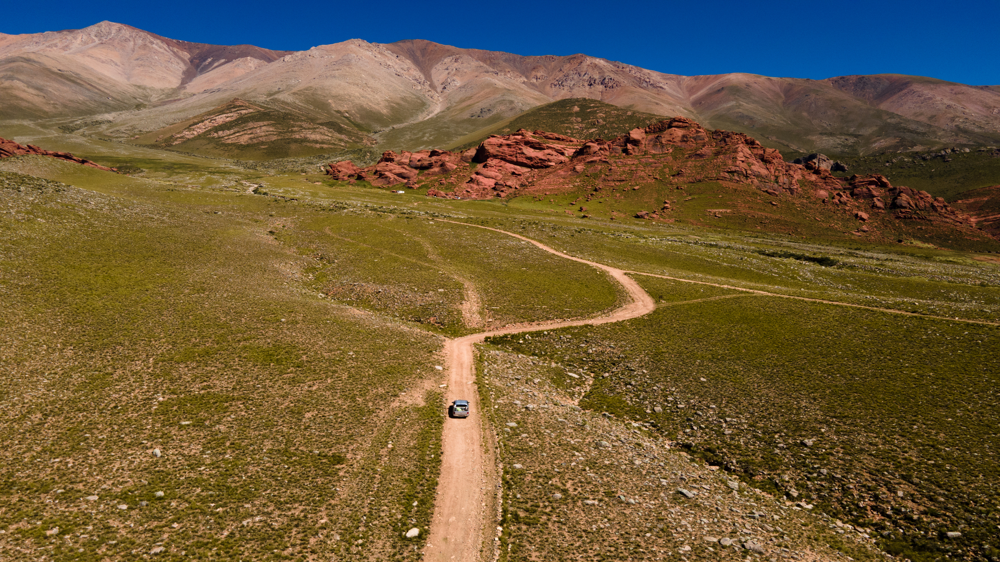
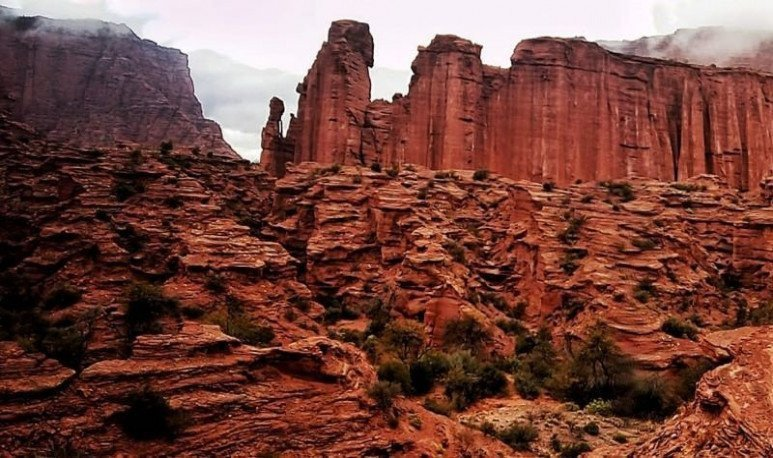
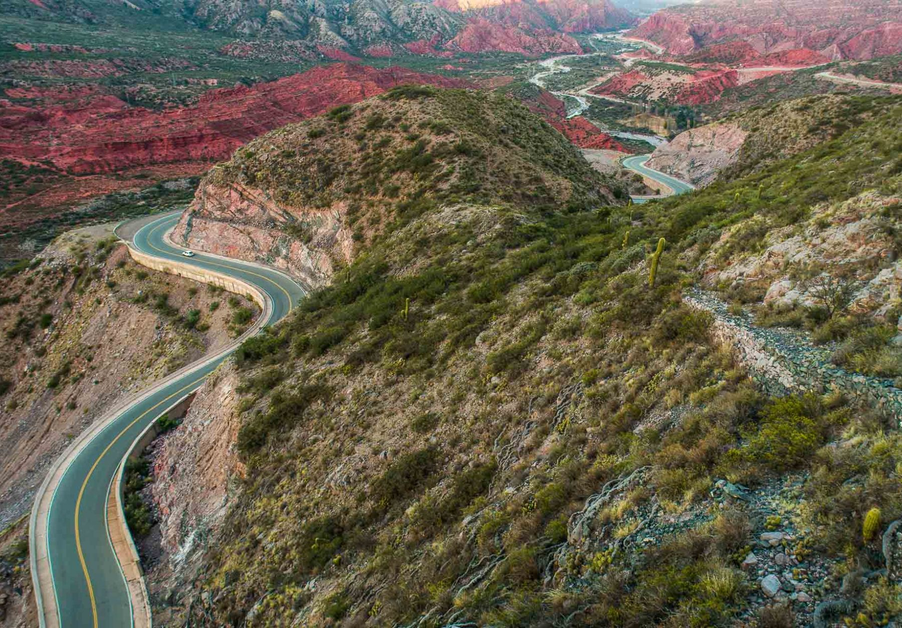
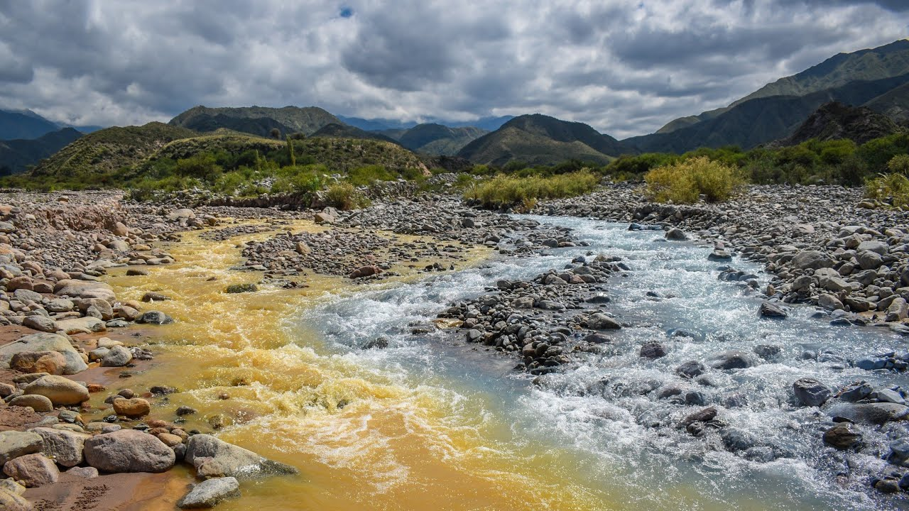
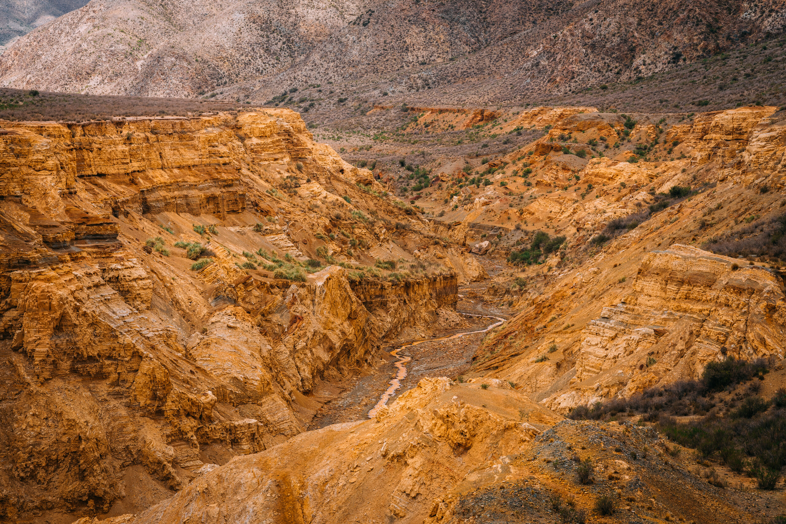

La Sierra de Famatina es el macizo montañoso más imponente de La Rioja, con picos que superan los 6.200 metros de altura (el Nevado de Famatina es el más alto fuera de los Andes en América). Forma parte de las Sierras Pampeanas, con formaciones geológicas de millones de años: rocas rojizas, cañones erosionados por el viento y el agua, y valles fértiles irrigados por ríos glaciares. Es un paraíso para los amantes de la naturaleza, con paisajes que cambian del desierto árido a oasis verdes en cuestión de kilómetros.

La majestuosa Sierra de Famatina, con sus picos nevados al fondo
Geológicamente, la sierra es rica en minerales (historia minera visible en vetas expuestas), y su clima varía desde templado en el valle hasta frío en las alturas. Es un área protegida informalmente, ideal para ecoturismo responsable, con senderos que revelan su biodiversidad única.
El ecosistema es un contraste fascinante: en las zonas bajas dominan los cardones gigantes (cactus emblemáticos), jarillas, chilcas y algarrobos. En altitudes medias, encuentras molles y cortaderas. La fauna incluye cóndores andinos planeando en las térmicas, guanacos en las planicies, zorros colorados, pumas (raros de ver), y aves como águilas mora y carpinteros. En los ríos, truchas arcoíris y ranas nativas. Todo esto en un ambiente semiárido, con oasis que albergan vida silvestre única.
Las sierras ofrecen opciones para todos los niveles: desde caminatas suaves hasta ascensos desafiantes. Siempre con guías locales para seguridad, ya que el clima puede cambiar rápidamente (lluvias repentinas en verano). Recomendamos llevar agua, protector solar, mapa GPS y respetar el "no deje rastro".

Un trekking accesible de 4-6 horas (dificultad media), con cañones rojizos, petroglifos prehispánicos y vistas al valle. Ideal para principiantes, con pozas naturales para refrescarse en verano. Distancia: 8 km ida/vuelta.

Ruta escénica de 32 km por RN40: 100 curvas con vistas impresionantes a cañones rojizos, ríos y cardonales. Miradores a 2.020 m. Perfecta en 4x4 o tour guiado, con paradas para fotos y picnic.

Sendero a una cascada de 20 m en un cañón verde. Trekking de 5 km (dificultad baja-media), con aguas amarillentas por minerales. Fauna avistable: cóndores y guanacos. Mejor en primavera para flores silvestres.

Formaciones rocosas ocres y amarillas esculpidas por erosión. Trekking de 3-4 horas con petroglifos indígenas. Dificultad baja, pero con sol intenso: ir temprano. Vistas 360° al final del cañón.
Estas actividades combinan aventura con respeto al entorno: Chilecito promueve el turismo sostenible para preservar esta joya natural.